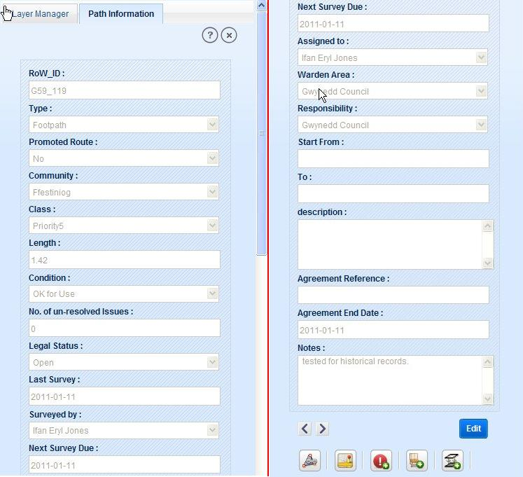

Path information module allows the user to view any path information and according to his role and rights, user will be able to edit path information and path geometry.
User can add a new path, create furniture, surface and issue on path and can view data associated with path.
In this functionality, user is allowed to view detailed information of a selected path.
User selects path data layer on layer manager and either click on (Search/ Query Builder/ Select Feature on map/ Select by Rectangle/Select by Polygon) tools on toolbar to select path.
Selected path feature/features are displayed in result panel.
Now select the required record from result panel and click on ‘Detailed Info’ tool on top of result panel.
Application opens new tab ‘Path Information’ in left panel with the detailed information of selected path in read only format.

Fig.1 Path Information
This functionality allows user to edit path attributes as detailed in the steps below:
User clicks on ‘Edit’ button on path information page.
Application changes the attributes to editable form excluding some of the fields like RoW_ID, Condition, etc. and with two buttons ‘Cancel’ and ‘Save’.
After doing the required changes in attribute fields, click on ‘Save’ button. User can discard all the changes by clicking on Cancel button.
Application saves the path changes updated by the user.
Previous data of path will also be retained in the system as historical details.
On saving the changes application displays message as “Path Details saved successfully”.
Now user can view the old details as historical details by clicking on ‘Previous’ button.
This functionality allows users to view historical survey details of a selected path:
To view historical details of a selected path, click on ‘Previous’ tool present on Path Information tab.
On clicking ‘Previous’ tool application shows the historical details previous of current details of selected path in left panel.
Previous tool allows user to traverse through the historical details of selected path till oldest historical details.
After first historical details, if user clicks on ‘Previous’ tool, application shows the message as “No Historical Records”.
To view later version of the path details, click on ‘Next’ button. As user reaches to the latest version, application displays message as “No More Records”.
This tool allows user to view furniture, surfaces, issues, contacts and legal related to a selected path.
Click on ‘Path Links’ icon on path information tab. Application opens a new tab ‘Path Links’ on map window. This window consists of the accordions: Issue, Contact, Furniture, Surface and Legal.
Click on ‘Go to Parent’ button, application shows the path details on left panel if path details tab is closed. And to go any of the five accordions just click on that accordion.
Fig.2 Path Links
These accordions are described below:
Issue
As user clicks on Issue accordion, application expands the accordion with the list of all open issues (if exists) in tabular format of selected path.
To view the old issues on that path, user clicks on ‘Historical Issues’ button. Application will display all historical issues of the path. If no historical issue exists for selected path, application shows a message “No historical issues are associated with selected Path”.
To go to the open issues list, click on Open Issues button.
Every records of open/historical issue list, has RoW ID field as link. Click on RoWID of an issue, issue details will be shown in left panel as Issue tab.
On clicking ‘Create/View job’ application opens a form in left panel as Job with job details if already created or as a new form to create job for issue.
Similarly if user clicks on ‘Create/View Legal’ icon, application opens a form in left panel as Legal with legal details if already created or a blank form to create legal for that issue.
Contact part contains the list of contacts of SNPA contractors related to selected path. Here user is allowed to add new contact to path and select a contact to add to path from the contractor’s existing list.
User clicks on a Contact accordion, application expands contact tab with the tabular list of contacts related to selected path.
To view detailed information of a contact, click on ContactID of a record.
In the last column of the table a tool ‘Delete’ exist to delete the contact record.
To add a new contact, click on Add New Contact button or to add a contact from existing users’ list click on Add Existing Contact button.
Fig.3 Contact Accordion
In furniture section user is allowed to view the furniture list on the selected path.
User clicks on ‘Furniture’ accordion, application expands the list of all furniture related to the selected path in tabular format.
To view detailed information of a furniture record from the list, click on FurnitureID of that record.
Fig.4 Furniture Accordion
In this section user can see the surfaces related to selected path.
User clicks on ‘Surface’ accordion, application expands the list of all surfaces related to the selected path in tabular format.
To view detailed information of a surface from the list, click on SurfaceID of that record.
Fig.5 Surface Accordion
In legal section user is allowed to view legal’s details related to selected path.
User clicks on Legal accordion from path link of the selected path. Application expands legal accordion with all the legal related to that path in tabular format.
To view details of a particular legal, click on LegalID of that record.
Fig.6 Legal Accordion
With this functionality user is allowed to zoom to selected path from the detailed info of the path. Click on ‘Locate on Map’ tool on detailed info of selected path. Application zooms to the selected path on map canvas.
This functionality allows user to create furniture on path. To create furniture on a path, follow the steps:
Select a path and open its detailed information with Detail Info tool in result panel.
Click on Create Furniture tool. Application opens Editing tab in left panel with furniture as selected layer.
Click on create link and select point tool
Click on required location on map, application opens attribute in Edit Attribute link.
Fill all furniture details and click on Apply button. Then click on Save button. Furniture will be created on the clicked location on path (linking the furniture to path).
If user clicks on a location other than selected path application displays message “No Path found at this location”.
This tool allows user to create a new surface on path.
For surface creation, user has to click on ‘Create Surface’ tool in Path Information tab. Application opens Editing tab in left panel with all the editing functionality with Surface selected as editable layer.
Click on create link in editing tab. Application expands create link.
Select line tool from Create part. Now draw a line on the selected path. Double click to finish the line.
Application expands Edit Attribute part with all the surface fields.
Enter the values in these fields and click on ‘Apply’ button. Application validates the fields and displays message “Click on Save button to save the Surface”.
Click ‘Ok’ and save the surface by clicking on ‘Save’ button in general editing tools. Application displays created surface on map over path (linking surface to path).
If user draws a line outside the selected Path, a message pops-up as “No Path found at this location”.
User is allowed to mark an issue on path under this functionality. To create an issue over a path:
Select path and view its detailed information in Path Information tab.
Click on ‘Create Issue’ button. Application opens editing tab in left panel with editing functionality.
Click on Create link in editing tab and select point tool from Create part.
Click on map over path at required location. If user clicks at a location other than selected path application displays message “No Path found at this location”.
On clicking over path, application expands Edit Attribute link with all the issue details.
Enter the values for all the fields. Click on ‘Apply’ button. Application validates the fields and displays message “Click on Save button to save the Issue”.
Click ‘Ok’ and save the issue by clicking on ‘Save’ button in general editing tools. Application displays the issue on path.